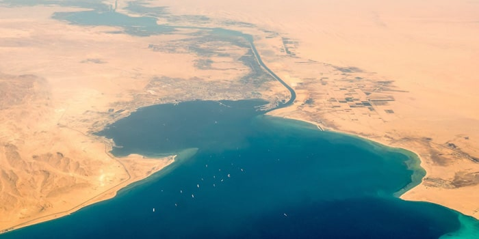
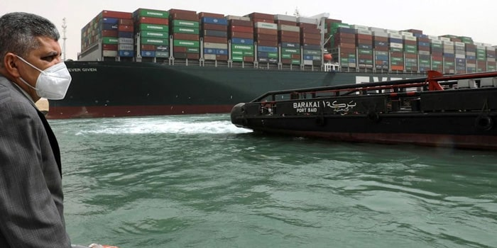
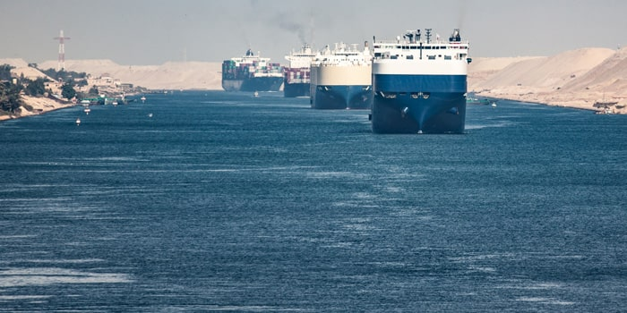

The Incident of the EVER GIVEN has brought to the forefront a
rather unique Maritime implication, which is the unprecedented disruption
of the Maritime Supply Chain and the phenomenal economic fallout
created, already exasperated by the current Pandemic situation.
While at this stage it is too early to comment on the cause of the
incident, there is significant information emerging over public
domain that investigators may likely examine the performance of
the two Egyptian canal Pilots on board this vessel and the challenges
they may have faced in moving a ship of this size and that too over
a single lane artery of the waterway.
While the prevalent environmental conditions widely remain the major factor, Lt. Gen. Osama Rabie of the Suez Canal Authority told reporters that the investigation will not focus just on the weather and that human and technical errors cannot be ruled out (Sudarsan Raghavan, Adam Taylor and Ruby Mellen WASHINGTON POST March 30th, 2021)
Irrespective of the outcome of the investigation, examination of the Suez Canal Authority RULES OF NAVIGATION SCA ART 4 RESPONSIBILITY, it is apparently clear that pilots or the SCA are not liable for any damage during their watch of the ship. And this is not isolated to the Suez Canal authority but prevalent with pretty much any other Port, waterway, or canal where pilotage is employed.
Now if it is assumed that “HUMAN ERROR” be a cause or contributing factor, it is more than likely that aspects of training, certification and qualifications will be brough to the limelight, more so for the Master and crew of the vessel than the Pilots that were embarked onboard.
It would thus be prudent to examine broadly, if there are specific guidelines, regulations or recommendations that directly connect to training, qualification and certification in maneuvering large ships through Canals and waterways, for both the Master and crew of a vessel and for the Pilots they embark. Perhaps the outcome of the current incident may assist to bring about a change and focus on ship handling priorities that could enable an enhanced and standardized program to be put in place.
The IMO STCW convention, suitably amended up to the current 2010 regulation in force, mandates signatory flag states to adhere to training and certification for seafarers within 7 chapters, with the 2010 amendments emphasizing competence rather than sea service or period of training. This is commendable since it now relates to enhancing skills of the Seafarer together with experience and has put in focus the need for ship handling training to be imparted as part of the certification process.

Having said that, there is very little emphasis seen on standardization of ship maneuvering training, and very little evidence sighted of it being applied to aspects of ship handling knowledge within narrow channels, canals and waterways.
Based on information on ship maneuvering simulators from lead manufacturers such as WARTSILA there is evidence sighted that ship models and modules usually employed for training seafarers are based on “seagoing conditions” with verry little module exercises that simulate narrow channel scenarios or those that closely replicate the Suez Canal. These are generally reserved for Pilotage authorities and their in-house training requirements, and those modules generally used to impart ship maneuvering training to seafarers have little or no on-site validation scenarios.
It would also be prudent to look at the level of ship handling training offered to seafarers by way of an advertised course module syllabus sighted from a specific and registered institute which states - Student’s practice turning circles and stopping distance in deep and shallow water, man overboard procedures and basic anchoring. Students will demonstrate their knowledge, understanding and proficiency in basic ship handling on a Full Mission Simulator and by written test. This appears grossly inadequate in the context of scenarios where ship handling focus come to the fore, such as but not limited to narrow channels, rivers, and confined waterways such as the Suez Canal.
Another aspect worthy of consideration is the bifurcation of training requirements in the context of the STCW certification process, which is Operational and management level. The point here is that there are no stated guidelines mandating ship handling training for seafarers at the Operational level, and this is a likely lacuna, as Navigation officers such as 3rd and 2nd officers generally lack theoretical and practical knowledge of ship handling, despite them being important members of the bridge team during canal and pilotage transits.
Now let us look broadly at the aspects of Pilot training, and if any standardization or regulations exist.
The IMO in 1968, adopted Assembly resolution A.159(ES.IV) Recommendation on Pilotage. This resolution recommends Governments organize pilotage services where they would be likely to prove more effective than other measures and to define the ships and classes of ships for which employment of a pilot would be mandatory.
This in principle emphasis the use of Pilots in areas where their local knowledge would aid in ship transits to a higher level of safety and efficiency than would normally be the case.
The IMO Assembly in 2003 adopted resolution A.960(23) Recommendations on training and certification and operational procedures for maritime pilots other than deep-sea pilots, which includes Recommendation on Training and Certification of Maritime Pilots and Recommendation on Operational Procedures for Maritime Pilots other than Deep sea Pilots. The key word here is RECOMMENDATIONS and not REGULATION as is the case for seafarer training and certification.
The 960(23) Recommendations on training and certification and on operational procedures for maritime pilots recommend member states to develop and manage a pilot training program based on 28 broad-based recommendation, of which only 2 relate directly to ship handling and maneuvering training.

In relation to the Suez canal, and leaving aside the unsubstantiated premise publicly known on the behavioral aspect of the Suez canal pilots and the attached “MARLBORO CULTURE” which indeed is incorrect, and generally offensive to those who take great national pride in the Canal, the Suez canal authority is known to have a reportedly excellent Pilot training simulator, right from 2010 onwards, and in March 2020, a new navigational bridge simulator and software upgrade was further updated to enhance the training capabilities.
In addition, the SCA is investing in Portable Pilot Units (PPU), giving pilots instant access to many of the digital tools used in transit and maneuvering.
Having said that, the SCA runs ship maneuvering training programs, but looking at a course schedule available on their website, for SAFE HANDLING OF SHIPS IN SUEZ CANAL – the program is seen to be a 5-day course, with practical Simulator maneuver exercises seen allocated only 3.5 hours each day, with only 1 day allocated for a 7-hour training, including 2 hours break.
The effectiveness of this is anybody’s guess, and it may be prudent to examine if an enhancement is required.
In another example, examination of the Deputy Pilot Licensure requirements from the Florida Department of Business and Professional regulation, their candidate information booklet for the examination leading to Florida state pilot certification lists Seamanship and Ship handling as only 1 of the 7 contents being tested, with no evidence sighted if Ship handling simulation being included in the course material and examination.
In addition, the certification examination for seamanship and ship handling list 50 classroom paper of TRUE or FALSE questions, and the document does not enumerate if ship handling skills are to be tested by way of a simulator exercise. It is thus assumed that ship handling and maneuvering skills are taught and practiced “on the job” and its scope and extent are left to the individual Pilot association registered with the Florida Department of Business and Professional regulation department.
IN CONCLUSION
This article is not meant to in any way judge or influence the anticipated outcome of the investigation connected with the vessel EVER GIVEN incident.
Its sole purpose is to broadly discuss the aspects of training of seafarers and pilots which may be seen as an opportunity to enhance ship handling simulation.
While the investigation for the EVER GIVEN is ongoing, and the jury is still out, it may be prudent to ponder on enhancing and standardizing ship handling simulation training, as this offers the best and only safe environment to practice predictive and emergency maneuvers not normally encountered during normal operations.
This observation has been made in view of the reported statements made in public domain information articles, where senior pilots of the Suez Canal authorities have commented “the job of navigating ships through canals had become more taxing in recent years” and ““The ships today are bigger than they used to be,” the pilot said. “This is something new. We haven’t seen this before.”